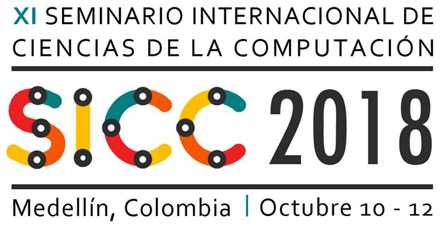
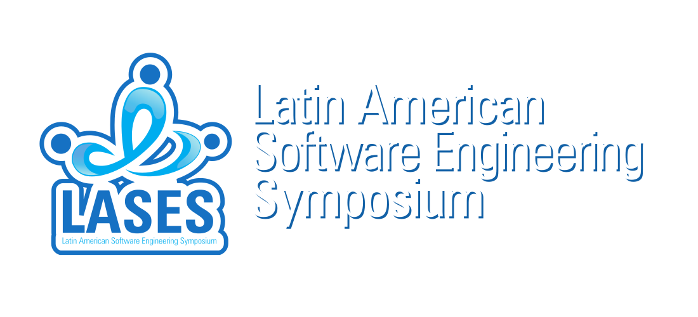

En asocio con:

Nota: Cada persona participante en el evento puede inscribirse a un tutorial y a una maratón. En el caso de algunas maratones se debe hacer inscripción indicando la configuración del grupo. El cupo para tutoriales y maratones es limitado. Los primeros inscritos serán tomados en cuenta. Cuando se agoten los cupos esto será informado.
Inscripción a tutoriales:
Clic aquí
Inscripción a maratones:
Clic aquí
Descargar informacion de tutoriales y maratones:
Clic aquí